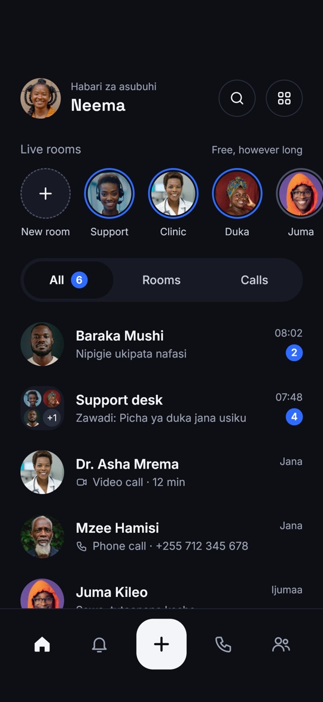
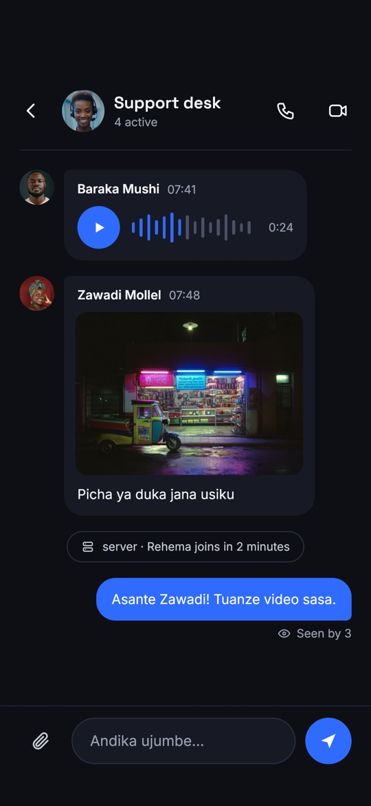
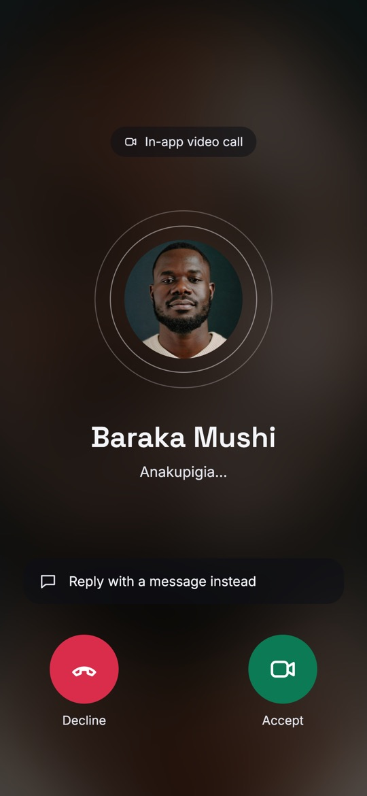
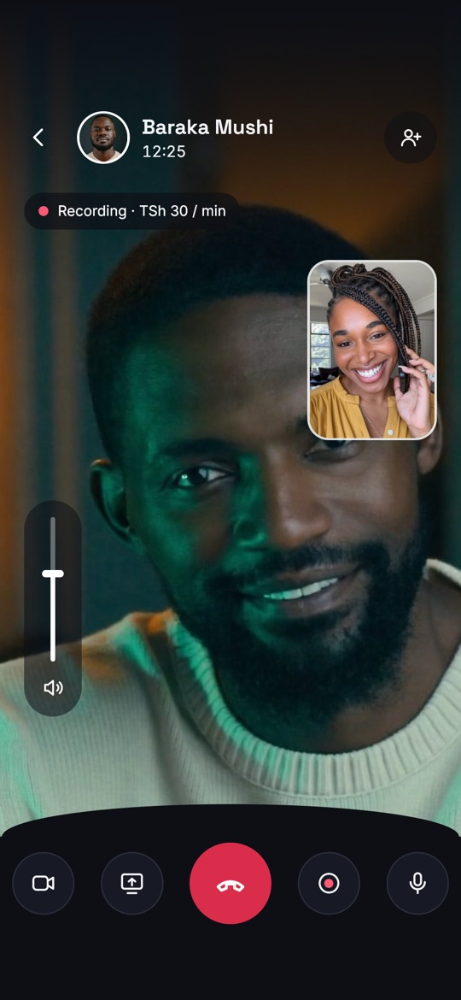

Barua Talk
Rooms, chat and calls, reproduced from a design of five pages and made to work with a server. It is the app that uses live rooms: sound, both cameras and a shared screen.




What it shows
- Photographs beside the drawing, a blurred backdrop behind an incoming call, and an arched bar.
- A live room: an answered call, a joined room and a dialled phone call join with the ticket the server gives. Mute, the loudspeaker, the camera and screen sharing act on the real connection.
- Honest status: the call screen says in words how the sound stands, including why there is none.
- Chat: in rooms, and between two people.
- All four opt-in services:
live,live-video,live-screenandlive-background. - A browser test client: the server serves a page at
/consolethat speaks the same contract as the app, so a call can be made between a browser tab and a phone.
Beyond the five designed screens it has its own: a welcome screen, a dial pad, a new-room screen, people, notifications, and a screen about the server.
Fidelity
Each designed screen is held to its picture:
| Screen | Measured difference | Limit |
|---|---|---|
| Home | 0.0847% | 0.10% |
| Room | 0.6900% | 0.70% |
| Incoming call | 0.0154% | 0.05% |
| Video call | 0.2860% | 0.30% |
| Phone call | 0.0499% | 0.05% |
Run it
cargo test -p barua-talk
cargo run -p barua-talk --example screenshot -- out/ 04 --diff --phone
tools/preview.sh barua-talk
MORNINGSTAR_APP=barua-talk MORNINGSTAR_ABIS=arm64-v8a tools/build-android.sh --installWith its server:
cd examples/barua-talk/server
cp .env.example .env # then fill in the keys; .env is never committed
npm start # 127.0.0.1:8789, and the test client at /console
adb reverse tcp:8789 tcp:8789The server needs a PostgreSQL database and a Barua Talk API key. Phone calls cost money upstream and stay off unless the server is told otherwise. Node 22 or newer. server/API.md is the contract between the app and the server.
What has been verified
The app passes its tests on the development machine, and its server's tests pass against the real Barua Talk API for rooms, tickets, chat and in-app calls. The app has been installed on a phone. No call has been confirmed working on a phone yet: sound and pictures through a real room are unverified, and the live preview on a Mac answers live rooms with Unsupported.
examples/barua-talk/SCREENS.md has the step-by-step test for a phone, with the log line that proves each step.